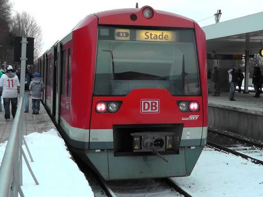

474-874

- Backride 🠆 Ja
- Länge 🠆 66m
- Haupteinsatz 🠆 S1, S3, S31
Bei der Baureihe 474/874 handelt es sich um einen Elektrotriebwagen speziell für das Hamburger S-Bahn-Netz. 2001 wurden die ersten Fahrzeuge ausgeliefert. Die Baureihen 474 und 874 verkehren überwiegend auf den Linien S1, S3, S31.
Die Züge besitzen nur eine mechanische Kupplung und einen Fenstervorsprung, und sind deshalb bestens für Backrides, Frontrides und Zwischenrides geeignet.
Bei der Mehrsystemausführung 474.3 wurden an den Mittelwagen Stromabnehmer für Oberleitungen installiert, die insbesondere für die Zugfahrten von Neugraben bis Stade eingesetzt werden.
Mitte 2012 wird eine Modernisierung auf die Baureihe 474 Plus erwartet, bei denen wie bei der DT5 Durchgänge zwischen den Wagenteilen geschaffen werden.